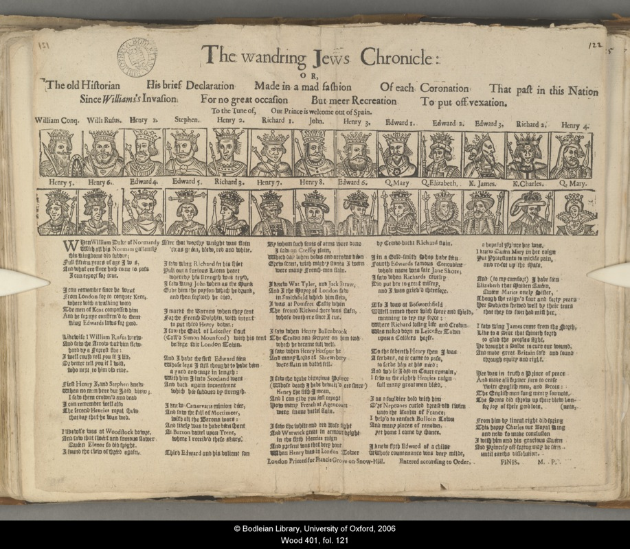
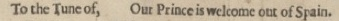

The Wandering Jew's Chronicle
1. Introduction
Some time in the late 1680s, the historian John Aubrey set down in manuscript his account of the common knowledge, beliefs and customs of the English. Not published until the nineteenth century, Aubrey's work was an early example of the genre of historical writing that could, by then, be described as folklore: written knowledge's common counterpart. According to Aubrey, the common store of knowledge, of which he was an advocate and a mediator, was in need of preservation precisely because of the advance of written knowledge and, in particular, because of printing:
'In the old ignorant times, before woomen were Readers, the history was handed downe from Mother to daughter [...] So my Nurse had the History from the Conquest down to Carl. I in ballad [...] The ordinary sort of People were not taught to reade: now- a dayes Bookes are common, and most of the poor people understand Letters: and the many good Bookes [...] Have frighted away Robin-good-fellow and the Fayries.'[1]
Aubrey's anecdote has become famous, a staple of histories of the time, cited as indicative of the period's growing sense of distance from a notionally communal oral past, exemplified by the erudite Aubrey's complicated nostalgia for his own pre-literate self. Nurses, prominent in folklore, are commonly sentimentalised as passive bearers of tradition or, at other times, castigated as superstitious, unreliable witnesses to what only becomes true folklore - or history - when written down. Aubrey's nurse stands somewhere between these extremes: between not only Aubrey and his childhood fancy (and by extension all our childhoods, before we learnt to read) but also between modern, reliable historical knowledge and 'old wives' tales.'[2] The status of the popular ballad is not dissimilar. Aubrey elsewhere attests that 'Antiquaries, when they cannot meet with better authority, will not disdaign to give an old ballad in evidence.'[3] Another historian of the time, John Selden, famously described ballads as 'straws in the wind' that showed which way the wind of popular feeling was blowing.[4] The ballad is not history, but it is evidence: testifying if not to what actually happened, then at least to what was generally felt.
We know a certain amount about Aubrey's nurse. Katherine Bushell, of the village of Ford in Somerset, is often anonymised in re-tellings of Aubrey's anecdote, turned proverbial to the detraction of her status as perhaps one of the more influential historians of her neighbourhood. The ballad also goes unnamed in most accounts of the anecdote, but the history of England from the Norman Conquest to Charles I may not have been a song passed down from mother to daughter since time immemorial, before the rise of print. According to Robert Shwegler, it may itself have been a printed item - namely, a broadside ballad entitled The Wandering Jew's Chronicle, of which the only apparently surviving copy of the earliest surviving edition is reproduced below, a copy now in the Bodleian Library and previously owned by the Oxford antiquary Anthony Wood.[5] Catalogued at the Bodleian as Wood 401(121), it is designated as A.2.(a) within the edition that this paper accompanies.

Fig. 1. The Wandering Jew's Chronicle A.2. (Bodleian Wood 401 (121))
Shwegler's attribution is probably correct. Although Wood's copy was printed around 1656 an earlier edition, perhaps the first, was published around 1634, at which time Aubrey would have been eight years old.[6] No other ballad fits Aubrey's description, although Bushell may of course have been singing a composition of her own, or a sequence of topical ballads in chronological order, a form of historical narrative common among ballad collectors.[7]
Wood's copy of the Wandering Jews's Chronicle consists of a short text, printed in a mixture of antique 'blackletter' and Roman typefaces, headed by woodblock-printed portraits of monarchs. Both the illustrations and the text narrate the succession to the throne of England, from William I to Charles I and his queen, Henrietta Maria. The text is attributed to 'M. P', or Martin Parker, one of the most popular balladeers of his time, best known for the royalist song 'When the King Shall Enjoy his Own Again.'[8] A tune accompanying the text is given as 'Our Prince is Welcome Out of Spain' - a reference to the abortive Spanish Match of 1623 in which the then Prince Charles, the future Charles I, returned to England following some efforts to marry into the royal family of Catholic Spain.[9] Such a tune, at least under this name, now appears to be lost to traditional song scholarship.[10]

Fig. 2. Tune of The Wandering Jew's Chronicle (A.2).
In truth, the history of The Wandering Jew's Chronicle contains little that is certain. Most of the evidence we have comes only from the ballad itself, of which I have located and inspected twenty-five copies of fourteen editions, published between approximately 1634 and 1825. Evidently a popular enough ballad to be worth reprinting, it has left few other traces in the historical record.[11] We have no figures for edition sizes, and no history of sale, performance, recital, reading or display, with the exception of Aubrey's testimony and a handful of other references. This paper attempts to consolidate our knowledge of the Chronicle's two centuries in print. It draws upon the methods of bibliography (the study of printed books as objects); book history (the study of the broader circumstances behind books' publication and reception); and textual criticism, or scholarship (the study of the transmission of the information that the books contain) situating these empirical methods within the broader interpretive horizons of literary criticism and cultural history. One aim is to ask what we can learn from applying these methods, most of which are generally reserved for the most canonical of cultural forms, to a work that has been almost entirely forgotten, but whose eccentrities and complexities put those methods under considerable pressure. What can we learn about The Wandering Jew's Chronicle from book history, and vice-versa? This paper, and its accompanying edition, also contends that the Wandering Jew's Chronicle is 'good to think with', in particular about the history of media and of the relationships between media and various cultural and intellectual traditions. In this, it owes a debt to Roger Chartier's call for a history of print based on 'case studies and object studies', in which it is taken for granted that no one case can provide a comprehensive picture of the past, but that each case may test the completeness of any one model and provide incentives for carrying out further studies of printed objects and their contexts.[12]
[1] John Aubrey, Remaines of Gentilisme and Judaisme, edited by James Britten, (Folklore Society, 1881), 67-68.
[2] D. R. Woolf, 'The "Common Voice": history, folklore and oral tradition in early-modern England', Past and Present, 120, (1988), 26-52; 'A feminine past? Gender, genre, and historical knowledge in England, 1500-1800', American Historical Review, 102:3, (1997), 645-79; and Reading history in early-modern England, (Cambridge: 2000); Adam Fox, Oral and literate culture in England, 1500-1700, (Oxford University Press, 2002). On ballad transmission and gender, see Susan Stewart, 'Scandals of the ballad', Representations, 32, (1990), 134-56; Henk Dragstra '"Before woomen were readers": how John Aubrey wrote female oral history', in Oral traditions and gender in early-modern literary texts, edited by Karen Bamford and Mary Ellen Lamb (Ashgate, 2007), 41-53; Sigrid Rieuwerts, 'Women as the chief preservers of traditional ballad poetry', in Folk ballads, ethics, moral issues, edited by Gabor Barna and Ildiko Kriza, (Akademiai Kiado, 2002), 149-59; and Ann Wierda Rowland, '"The fause nourice sang": childhood, child murder, and the formalism of the Scottish ballad revival', in Scotland and the borders of romanticism, edited by Leith Davis, Ian Duncan and Janet Sorensen, (Cambridge University Press, 2004), 225-44.
[3] Quoted in Adam Fox, 'Remembering the past in early-modern England', Transactions of the Royal Historical Society (Sixth Series), 9, (1999), 233-256, 253
[4] This famous saying of John Selden is first recorded in a compilationof his discourse assembled by Richard Milward - Table-talk being the discourses of John Selden, Esq., (London: Printed for E. Smith, 1689), 31. It is inscribed on the front of Volume One of Samuel Pepys' collection of ballads, which are ballads are now in the Pepys Library at Magdalene College and are available online through EBBA (http://www.ebba.english.ucsb.edu, accessed 26/9/14). On Selden's ballads within the Pepys collection, See Leba M. Goldstein,'The Pepys ballads', The Library, (5.4), (1966), 282-292 and John C. Hirsh, 'Samuel Pepys as a collector and student of ballads', Modern Language Review, 106:1, (2011), 47-62.
[5] Robert A. Schwegler, 'Oral tradition and print: domestic performance in renaissance England', The Journal of American Folklore, 93:370, (1980), 435-441. On Anthony Wood, see http://ballads.bodleian.ox.ac.uk/collection/wood(accessed 5/12/13).
[6] Henk Dragstra suggests that Aubrey, who suffered from illness as a child and did not go away to school until he was twelve, might have been cared for by Bushell, who had been his wet-nurse: Dragstra, '"Before woomen were readers", 46; see also his acute commentary on the Chronicle, 'The politics of holiness: royalty for the masses in The Wandring Jews Chronicle', in Transforming holiness: representations of holiness in English and American literary texts (Peeters, 2006), 61-80). In both publications Dragstra suggests that the A.2 edition was published in 1634, based on an entry of that date in the Stationers' Register. This dating is however contradicted by publishing history and, more conclusively, woodcut evidence (for which, see the section of this paper entitled 'The Ballad's Illustrations').
[7] Examples include Thomas Percy, who transcribed ballads in a manuscript book now in the Houghton Library, Harvard entitled 'A Series of Ballads on English History', (Houghton bMS Eng, 893 (20A); Charles Firth, Regius Professor of History at Oxford and a collector and scholar of ballads (see http://ballads.bodleian.ox.ac.uk/collection/firth [accessed 15/12/13] and Roy Palmer, in his A ballad history of England from 1588 to the present day, (Batsford, 1979).
[8] SA Newman, 'The broadside ballads of Martin Parker: a bibliographical and critical study', (unpublished PhD. thesis, University of Birmingham, 1975); Hyder Rollins, 'Martin Parker, ballad-monger', Modern Philology, 16:9, (1919), 449-474 and 'Martin Parker: additional notes,Modern Philology, 19:1, (1921), 77-81; and Angela McShane, 'Parker, Martin', in The encyclopedia of English renaissance literature, edited by Garrett A. Sullivan and Alan Stewart (Blackwell, 2012), online at http://www.academia.edu/4079656/Martin_Parker_Balladeer (accessed 5/12/13).
[9] Alexander Samson (ed.), The Spanish match: Prince Charles's journey to Madrid, 1623, (Ashgate, 2006)
[10] It is not recorded in, for example, Claude M. Simpson, The British broadside ballad and its music, (Rutgers University Press, 1966), or William Chappell, Popular music of the olden time, (London: Cramer, Beale, & Chappell, 1859).
[11] Copies and editions are described in Giles Bergel, 'Bibliography of the Wandering Jew's Chronicle', (2015) at http://wjc.bodleian.ox.ac.uk/HTML/bibliography.html for which the author would be grateful for any additions.
[12] Roger Chartier, 'General Introduction: print culture', in The culture of print: power and the uses of print in early modern Europe, ed. by Roger Chartier, (Cambridge: Polity Press, 1989), p.3.